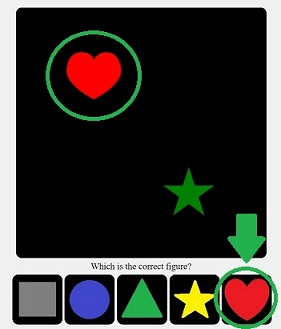
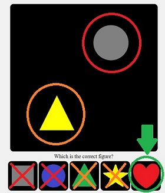

The players connect with their phones and compete by comparing reaction times. Each player will have the same 5 colored figures to choose from during each round.
At the start of a round, the main screen will show a picture depicting two colored figures. Depending on the picture, a certain figure will be the right choice for that round. After a certain time limit, the players who chose the correct figure receive points (the first player to answer gets double points) and the players who chose an incorrect figure lose points.
At the end of the game, the player with the most points wins.
The 5 colored figures are:
There are 2 different types of pictures:
Type 1: The picture contains a figure in its correct color. In this case, the correct figure to choose is the figure which is depicted in its correct color:
Type 2: Both figures in the picture are depicted in the wrong color. In this case, the correct figure to choose is the figure that has neither its shape nor its color depicted:
Click 'Play game' to play online multiplayer. Have your friends visit the join link on their phone (and the observer link on their computers if playing remotely).
Click 'Training mode' to play the offline single player mode. This is useful for practice.